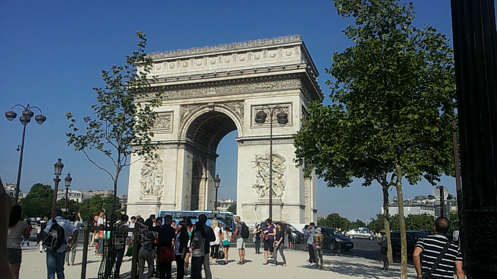
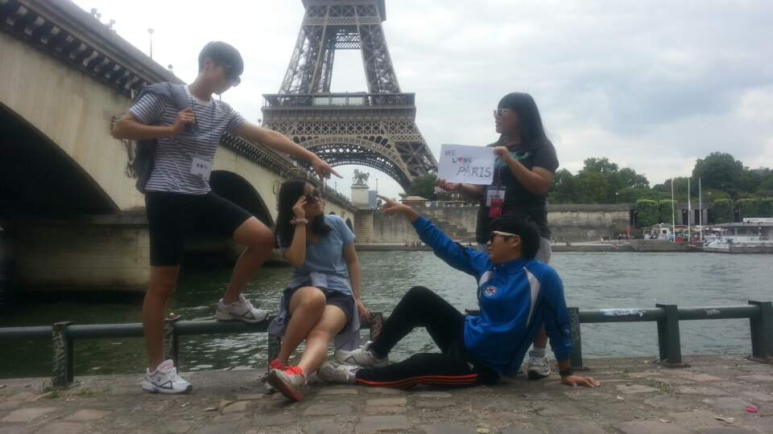
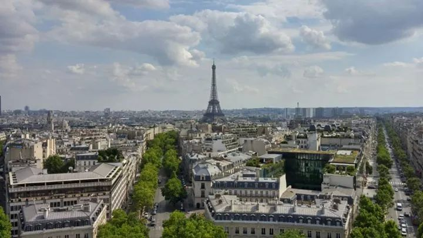
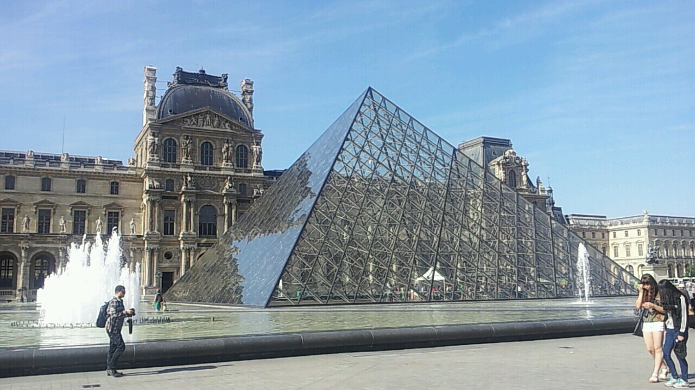

- 프랑스에서의 여행
- 이탈리아에서의 여행

개선문
비행기를 타고 처음 도착한곳은 프랑스였다.
그 중에서 우리는 흔히 개선문이라고 불리는 에투알 개선문을 먼저 방문했다.
에투알 개선문은 높이 51미터, 너비 45미터로 웅장한 규모를 자랑한다.
로마의 티투스 개선문에서 영감을 받은 이 개선문은 프랑스 황제 나폴레옹 1세가 1806년 아우스터리츠 전투를 승리한 뒤 프랑스 군대의 모든 승리를 기념하기 위해 만든 것 이다.
도심 한가운데 서있는 이 개선문을 올라가기 위해 계단을 이용해야만 했다.
걸어서 올라가는 과정은 상당히 힘들었지만 개선문 정상에 도착했을때 나를 맞이한 전경은
이미 내 힘든것들을 모두 날려버렸었다.
낯선 나라에 와서 가장 처음본 장관이었기 때문에 감동이 더 컸던것 같고 앞으로 볼 다른 문화재들은 얼마나 더 큰 감동을 줄지 기대가 되었다.

프랑스의 상징 에펠탑
모 게임에서는 각 나라를 대표하는 랜드마크가 존재한다, 이를테면 미국은 자유의 여신상, 브라질은 리우데자네이루 예수상처럼, 프랑스도 프랑스를 대표하는 건축물이 있다.
바로 에펠탑이다.
에펠탑은 1889년 프랑스혁명 100돌 기념 '파리 만국박람회(EXPO)' 때 세워진 높이 약 320m의 격자형 철탑으로,
탑의 이름은 이 탑을 세운 프랑스 건축가인 에펠(Alexandre Gustave Eiffel 1832∼1923)의 이름에서 유래한다.
에펠탑을 가까이서 보면 정말 꼭대기가 보이지 않을 정도로 높다. 건축이 왜 예술이라고 불리우는지 실감하는 계기가 되었다.
다만 에펠탑의 단점은 몇가지가 있는 내가 내가 새 일단 나는 여름에 파리를 방문 했는데 일단 정말 사람이 많다. 세계적인 건축물인 만큼 정말 전세계에서 사람들이 모이기 때문에 항상 북적북적 하다.
그리고 에펠탑을 올라가려면 두가지 방법이 있는데 하나는 승강기를 이용하는것이고 다른 하나는 직접 걸어서 올라가는 것이다.
앞서 말한 것 처럼 에펠탑은 항상 사람이 많기 때문에 승강기 줄을 기다리는것은 최소 두시간정도 소요되기 때문에 나는 시간절약을 위해 직접 두발로 걸어서 올라갔다.
다만 꼭대기 까지는 못올라가고 에펠탑 중간 전망대 같은곳 까지만 올라갔었는데 그곳에서 본 파리도시의 풍경이 아직도 잊혀지지 않는다.
세계적인 대도시 프랑스 파리가 에펠탑을 중심으로 바둑판처럼 배열되어있는 모습은 건축에 문외한이었던 나조차도 경이로울 정도였다.


루브르 박물관
프랑스로 떠나는 비행기에 몸을 실으면서 사실 내가 가장 가고싶었던 곳은 바로 루브르 박물관 이었다.
어릴때 다빈치의 모나리자라는 그림에 숨겨진 비밀을 찾는 소설을 읽은 뒤, 모나리자가 있는 박물관에 간다는 사실만으로 나는 설레임에 한숨도 잘 수 없었다.
그렇게 도착한 루브르 박물관은 내가 인터넷에서 본 모습과 똑같았다. 유리로 된 피라미드가 입구에서 나를 맞이하여 주었고 얼른 박물관을 구경하고 싶은 마음에 그 흔한 셀카 한장 찍을 시간도 없이 박물관에 들어갔다.
문화와 예술을 정말 하나도 모르는 나조차 한번쯤 들어본 명작들을 지나치면서 공부는 했지만 한번도 말해본적 없는 안타까운 영어실력으로 물어물어 도착한곳은 바로 모나리자였다.
하지만 모나리자를 바로 볼수는 없었는데, 모나리자앞에는 전세계에서 몰려온 사람들이 마감직전 할인하는 대형마트만큼이나 몰려있었고 거구의 외국인들을 비집고 들어간 나는 마침내 모자리자를 보았고 실망했다.
어릴때 내가 생각했던 모나리자는 한 벽면을 크게 차지 할 정도로 나를 압도할 수 있는 예술품 이었고
모나리자가 살아온 시간만큼이나 비밀이 많은 그런 작품이라고 막연하게 생각했는데
현실은 그냥 A4용지만한 정도의 작은 그림이었고 소설속에서 본것처럼 굉장한 비밀도 없었다.
덕분에 나는 오히려 다른 작품들을 더 주의 깊게 볼 수 있었고 내 인생에 있어서 정말 소중한 기억중에 하나가 되었다.